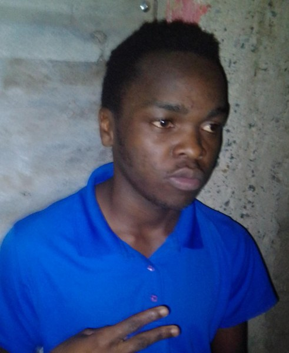

Welcome to Mambo Bad
Hello, and thank you for stopping by. My name is Raphael Andera. I am currently pursuing a Bachelor of Information Technology (BIT), and this website is my curriculum vitae in the form of a personal website.
Before joining my current course, I studied at Yala. That is where I built the foundation of discipline and hard work that I carry into my studies today.
Information technology interests me because it lets people solve real problems in simple ways. In my course I am learning how websites, databases and networks work, and I enjoy turning what I learn into something people can see and use.
After my course, I hope to work in the IT industry, where I can grow my skills in web development and support, learn from experienced professionals, and contribute to meaningful projects. Please browse the pages above to learn more about my experience, hobbies and how to reach me.